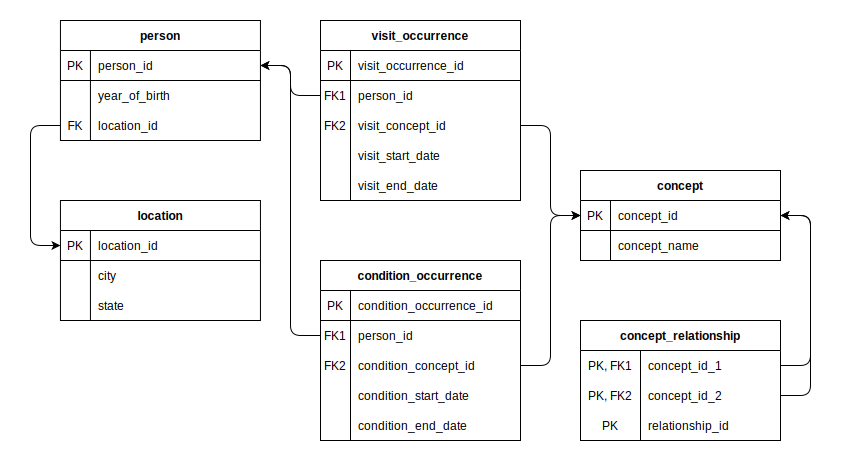
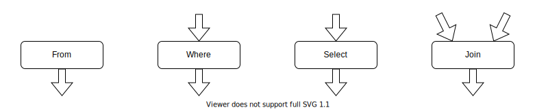

Usage Guide
This guide will teach you how to assemble SQL queries using FunSQL.
Test Database
To demonstrate database queries, we need a test database. The database we use in this guide is a tiny 10 person sample of simulated patient data extracted from a much larger CMS DE-SynPuf dataset. For a database engine, we picked SQLite. Using SQLite in a guide is convenient because it does not require a database server to run and allows us to distribute the whole database as a single file. FunSQL supports SQLite and many other database engines. The techniques discussed here are not specific to SQLite and once you learn them, you will be able to apply them to any SQL database.
The data in the test database is stored in the format of the OMOP Common Data Model, an open source database schema for observational healthcare data. In this guide, we will only use a small fragment of the Common Data Model.

The patient data, including basic demographic information, is stored in the table person. Patient addresses are stored in a separate table location, linked to person by the key column location_id.
The bulk of patient data consists of clinical events: visits to healthcare providers, recorded observations, diagnosed conditions, prescribed medications, etc. In this guide we only use two types of events, visits and conditions.
The specific type of the event (e.g., Inpatient visit or Essential hypertension condition) is indicated using a concept id column, which refers to the concept table. Different concepts may be related to each other. For instance, Essential hypertension is a Hypertensive disorder, which itself is a Disorder of cardiovascular system. Concept relationships are recorded in the corresponding table.
If you wish to follow along with the guide and run the examples, download the database file:
DATABASE = download("https://github.com/MechanicalRabbit/ohdsi-synpuf-demo/releases/download/20210412/synpuf-10p.sqlite")All examples in this guide are tested on each update using the NarrativeTest package. To avoid downloading the database file all the time, we registered the download URL as an artifact and use Pkg.Artifacts API to fetch it:
using Pkg.Artifacts, LazyArtifacts
DATABASE = joinpath(artifact"synpuf-10p", "synpuf-10p.sqlite")
#-> ⋮Using FunSQL
To interact with an SQLite database from Julia code, we need to install the SQLite package:
using Pkg
Pkg.add("SQLite")With the package installed, we can open a database connection:
using FunSQL
using SQLite
conn = DBInterface.connect(FunSQL.DB{SQLite.DB}, DATABASE)This call to DBInterface.connect creates a connection to the SQLite database, retrieves the catalog of available database tables, and returns a FunSQL connection object.
Some applications open many connections to the same database. For instance, a web application may open a new database connection on every incoming HTTP request. In this case, it may be worth to have all these connections to share the same database catalog. The application can start with loading the catalog using using reflect:
using FunSQL: reflect
catalog = reflect(DBInterface.connect(SQLite.DB, DATABASE))Then whenever a new connection is created, this catalog object could be reused:
conn = FunSQL.DB(DBInterface.connect(SQLite.DB, DATABASE),
catalog = catalog)Some database drivers, including the PostgreSQL client library LibPQ.jl, do not support DBInterface. For instructions on how to enable DBInterface for LibPQ, see this example.
Using the connection object, we can execute FunSQL queries. For example, the following query outputs the content of the table person:
using FunSQL: From
q = From(:person)This query could be executed with DBInterface.execute:
res = DBInterface.execute(conn, q)To display the result of a query, it is convenient to convert it to a DataFrame object:
using DataFrames
DataFrame(res)
#=>
10×18 DataFrame
Row │ person_id gender_concept_id year_of_birth month_of_birth day_of_bir ⋯
│ Int64 Int64 Int64 Int64 Int64 ⋯
─────┼──────────────────────────────────────────────────────────────────────────
1 │ 1780 8532 1940 2 ⋯
2 │ 30091 8532 1932 8
3 │ 37455 8532 1913 7
4 │ 42383 8507 1922 2
5 │ 69985 8532 1956 7 ⋯
6 │ 72120 8507 1937 10
7 │ 82328 8532 1957 9
8 │ 95538 8507 1923 11
9 │ 107680 8532 1963 12 ⋯
10 │ 110862 8507 1911 4
14 columns omitted
=#Instead of executing the query directly, we can render it to generate the corresponding SQL statement:
using FunSQL: render
sql = render(conn, q)
print(sql)
#=>
SELECT
"person_1"."person_id",
"person_1"."gender_concept_id",
"person_1"."year_of_birth",
"person_1"."month_of_birth",
"person_1"."day_of_birth",
"person_1"."time_of_birth",
"person_1"."race_concept_id",
"person_1"."ethnicity_concept_id",
"person_1"."location_id",
"person_1"."provider_id",
"person_1"."care_site_id",
"person_1"."person_source_value",
"person_1"."gender_source_value",
"person_1"."gender_source_concept_id",
"person_1"."race_source_value",
"person_1"."race_source_concept_id",
"person_1"."ethnicity_source_value",
"person_1"."ethnicity_source_concept_id"
FROM "person" AS "person_1"
=#In fact, we do not need a database connection if all we want is to generate a SQL query. For this purpose, we only need a SQLCatalog object that describes the structure of the database tables and the target SQL dialect:
using FunSQL: SQLCatalog, SQLTable
catalog = SQLCatalog(SQLTable(:person, columns = [:person_id, :year_of_birth]),
dialect = :sqlite)
sql = render(catalog, q)
print(sql)
#=>
SELECT
"person_1"."person_id",
"person_1"."year_of_birth"
FROM "person" AS "person_1"
=#Why FunSQL?
Let us clarify the purpose of FunSQL. Consider a problem:
Find all patients born between 1930 and 1940 and living in Illinois, and for each patient show their current age (by the end of 2020).
The answer can be obtained with the following SQL query:
SELECT p.person_id, 2020 - p.year_of_birth AS age
FROM person p
JOIN location l ON (p.location_id = l.location_id)
WHERE (p.year_of_birth BETWEEN 1930 AND 1940) AND (l.state = 'IL')The simplest way to incorporate this query into Julia code is to embed it as a string literal:
sql = """
SELECT p.person_id, 2020 - p.year_of_birth AS age
FROM person p
JOIN location l ON (p.location_id = l.location_id)
WHERE (p.year_of_birth BETWEEN 1930 AND 1940) AND (l.state = 'IL')
"""
DBInterface.execute(conn, sql) |> DataFrame
#=>
1×2 DataFrame
Row │ person_id age
│ Int64 Int64
─────┼──────────────────
1 │ 72120 83
=#With FunSQL, instead of embedding the SQL query directly into Julia code, we construct a query object:
using FunSQL: As, From, Fun, Get, Join, Select, Where
q = From(:person) |>
Where(Fun.between(Get.year_of_birth, 1930, 1940)) |>
Join(From(:location) |> Where(Get.state .== "IL") |> As(:location),
on = Get.location_id .== Get.location.location_id) |>
Select(Get.person_id, :age => 2020 .- Get.year_of_birth)The value of q is a composite object of type SQLNode. "Composite" means that q is assembled from components (also of type SQLNode), which themselves are either atomic or assembled from smaller components. Different kinds of components are created by SQLNode constructors such as From, Where, Fun, Get, etc.
We use the same DBInterface.execute method to serialize the query object as a SQL statement and immediately execute it:
DBInterface.execute(conn, q) |> DataFrame
#=>
1×2 DataFrame
Row │ person_id age
│ Int64 Int64
─────┼──────────────────
1 │ 72120 83
=#Why, instead of embedding a complete SQL query, we prefer to generate it through a query object? To justify this extra step, consider that in a real Julia program, any query is likely going to be parameterized:
Find all patients born between $start_year and $end_year and living in $states, and for each patient show the $output_columns.
If this is the case, the SQL query cannot be prepared in advance and must be assembled on the fly. While it is possible to assemble a SQL query from string fragments, it is tedious, error-prone and definitely not fun. FunSQL provides a more robust and effective approach: build the query as a composite data structure.
Here is how this parameterized query may be constructed with FunSQL:
function FindPatients(; start_year = nothing,
end_year = nothing,
states = String[])
q = From(:person) |>
Where(BirthRange(start_year, end_year))
if !isempty(states)
q = q |>
Join(:location => From(:location) |>
Where(Fun.in(Get.state, states...)),
on = Get.location_id .== Get.location.location_id)
end
q
end
function BirthRange(start_year, end_year)
p = true
if start_year !== nothing
p = Fun.and(p, Get.year_of_birth .>= start_year)
end
if end_year !== nothing
p = Fun.and(p, Get.year_of_birth .<= end_year)
end
p
endThe function FindPatients effectively becomes a new SQLNode constructor, which can be used directly or as a component of a larger query.
Show all patient data.
q = FindPatients()
DBInterface.execute(conn, q) |> DataFrame
#=>
10×18 DataFrame
Row │ person_id gender_concept_id year_of_birth month_of_birth day_of_bir ⋯
│ Int64 Int64 Int64 Int64 Int64 ⋯
─────┼──────────────────────────────────────────────────────────────────────────
1 │ 1780 8532 1940 2 ⋯
2 │ 30091 8532 1932 8
3 │ 37455 8532 1913 7
4 │ 42383 8507 1922 2
5 │ 69985 8532 1956 7 ⋯
6 │ 72120 8507 1937 10
7 │ 82328 8532 1957 9
8 │ 95538 8507 1923 11
9 │ 107680 8532 1963 12 ⋯
10 │ 110862 8507 1911 4
14 columns omitted
=#Show all patients born in or after 1930.
q = FindPatients(start_year = 1930) |>
Select(Get.person_id)
DBInterface.execute(conn, q) |> DataFrame
#=>
6×1 DataFrame
Row │ person_id
│ Int64
─────┼───────────
1 │ 1780
2 │ 30091
3 │ 69985
4 │ 72120
5 │ 82328
6 │ 107680
=#Find all patients born between 1930 and 1940 and living in Illinois, and for each patient show their current age.
q = FindPatients(start_year = 1930, end_year = 1940, states = ["IL"]) |>
Select(Get.person_id, :age => 2020 .- Get.year_of_birth)
DBInterface.execute(conn, q) |> DataFrame
#=>
1×2 DataFrame
Row │ person_id age
│ Int64 Int64
─────┼──────────────────
1 │ 72120 83
=#Tabular Operations
Recall the query from the previous section:
Find all patients born between 1930 and 1940 and living in Illinois, and for each patient show their current age.
From(:person) |>
Where(Fun.between(Get.year_of_birth, 1930, 1940)) |>
Join(From(:location) |> Where(Get.state .== "IL") |> As(:location),
on = Get.location_id .== Get.location.location_id) |>
Select(Get.person_id, :age => 2020 .- Get.year_of_birth)At the outer level, this query is constructed from tabular operations From, Where, Join, and Select arranged in a pipeline by the pipe (|>) operator. In SQL, a tabular operation takes a certain number of input datasets and produces an output dataset. It is helpful to visualize a tabular operation as a node with a certain number of input arrows and one output arrow.

Then the whole query can be visualized as a pipeline diagram. Each arrow in this diagram represents a dataset, and each node represents an elementary data processing operation.

The following tabular operations are available in FunSQL.
| Constructor | Function |
|---|---|
Append | concatenate datasets |
As | wrap all columns in a nested record |
Define | add an output column |
From | produce the content of a database table |
Group | partition the dataset into disjoint groups |
Iterate | iterate a query |
Join | correlate two datasets |
Limit | truncate the dataset |
Order | sort the dataset |
Partition | relate dataset rows to each other |
Select | specify output columns |
Where | filter the dataset by the given condition |
With | assign a name to a temporary dataset |
From, Select, and Define
The From node outputs the content of a database table. The constructor takes one argument, the name of the table.
As opposed to SQL, FunSQL does not demand that all queries have an explicit Select. The following query will produce all columns of the table:
Show all patients.
using FunSQL: From
q = From(:person)
render(conn, q) |> print
#=>
SELECT
"person_1"."person_id",
⋮
"person_1"."ethnicity_source_concept_id"
FROM "person" AS "person_1"
=#The From node also accepts a DataFrame or any argument supporting the Tables.jl interface, which is very convenient when you need to correlate database content with external data. Keep in mind that From serializes a DataFrame argument as a part of the query, so for a large DataFrame it is better to load it into the database and query it as a regular table.
df = DataFrame(person_id = ["SQL", "Julia", "FunSQL"],
year_of_birth = [1974, 2012, 2021])
q = From(df)
render(conn, q) |> print
#=>
SELECT
"values_1"."column1" AS "person_id",
"values_1"."column2" AS "year_of_birth"
FROM (
VALUES
('SQL', 1974),
('Julia', 2012),
('FunSQL', 2021)
) AS "values_1"
=#It is possible for a query not to have a From node:
Show the current date and time.
using FunSQL: Select
q = Select(Fun.current_timestamp())
sql = render(q)
print(sql)
#-> SELECT CURRENT_TIMESTAMP AS "current_timestamp"In this query, the Select node is not connected to any source of data. In such a case, it is supplied with a unit dataset containing one row and no columns. Hence this query will generate one row of output.
The same effect could be achieved with From(nothing):
q = From(nothing) |>
Select(Fun.current_timestamp())
sql = render(q)
print(sql)
#-> SELECT CURRENT_TIMESTAMP AS "current_timestamp"The Select node is used to specify the output columns. The name of the column is either derived from the expression or set explicitly with As (or the shorthand =>).
For each patient, show their ID and the current age.
q = From(:person) |>
Select(Get.person_id,
:age => 2020 .- Get.year_of_birth)
render(conn, q) |> print
#=>
SELECT
"person_1"."person_id",
(2020 - "person_1"."year_of_birth") AS "age"
FROM "person" AS "person_1"
=#To add a new column while preserving existing output columns, we use the Define node.
Show the patient data together with their current age.
using FunSQL: Define
q = From(:person) |>
Define(:age => 2020 .- Get.year_of_birth)
render(conn, q) |> print
#=>
SELECT
"person_1"."person_id",
⋮
"person_1"."ethnicity_source_concept_id",
(2020 - "person_1"."year_of_birth") AS "age"
FROM "person" AS "person_1"
=#Define could also be used to replace an existing column.
Hide the day of birth of patients born before 1930.
q = From(:person) |>
Define(:day_of_birth => Fun.case(Get.year_of_birth .>= 1930,
Get.day_of_birth,
missing))
render(conn, q) |> print
#=>
SELECT
"person_1"."person_id",
"person_1"."gender_concept_id",
"person_1"."year_of_birth",
"person_1"."month_of_birth",
(CASE WHEN ("person_1"."year_of_birth" >= 1930) THEN "person_1"."day_of_birth" ELSE NULL END) AS "day_of_birth",
⋮
"person_1"."ethnicity_source_concept_id"
FROM "person" AS "person_1"
=#Join
The Join node correlates the rows of two input datasets. Predominantly, Join is used for looking up table records by key. In the following example, Join associates each person record with their location using the key column location_id that uniquely identifies a location record.
Show all patients together with their state of residence.
From(:person) |>
Join(:location => From(:location),
Get.location_id .== Get.location.location_id,
left = true) |>
Select(Get.person_id, Get.location.state)The modifier left = true tells Join that it must output all person records including those without the corresponding location. Since this is a very common requirement, FunSQL provides an alias:
using FunSQL: LeftJoin
From(:person) |>
LeftJoin(:location => From(:location),
Get.location_id .== Get.location.location_id) |>
Select(Get.person_id, Get.location.state)Since Join needs two input datasets, it must be attached to two input pipelines. The first pipeline is attached using the |> operator and the second one is provided as an argument to the Join constructor. Alternatively, both input pipelines can be specified as keyword arguments:
Join(over = From(:person),
joinee = :location => From(:location),
on = Get.location_id .== Get.location.location_id,
left = true) |>
Select(Get.person_id, Get.location.state)The output of Join combines columns of both input datasets, which will cause ambiguity if both datasets have a column with the same name. Such is the case in the previous example since both tables, person and location, have a column called location_id. To disambiguate them, we can place all columns of one of the datasets into a nested record. This is the action of the arrow (=>) operator or its full form, the As node:
using FunSQL: As
From(:person) |>
LeftJoin(From(:location) |> As(:location),
on = Get.location_id .== Get.location.location_id) |>
Select(Get.person_id, Get.location.state)Alternatively, we could use bound column references, which are described in a later section.
Scalar Operations
Many tabular operations including Join, Select and Where are parameterized with scalar operations. A scalar operation acts on an individual row of a dataset and produces a scalar value. Scalar operations are assembled from literal values, column references, and applications of SQL functions and operators. Below is a list of scalar operations available in FunSQL.
| Constructor | Function |
|---|---|
Agg | apply an aggregate function |
As | assign a column alias |
Bind | create a correlated subquery |
Fun | apply a scalar function or a scalar operator |
Get | produce the value of a column |
Lit | produce a constant value |
Sort | indicate the sort order |
Var | produce the value of a query parameter |
Lit: SQL Literals
The Lit node creates a literal value, although we could usually omit the constructor:
using FunSQL: Lit
Select(Lit(42))
Select(42)The SQL value NULL is represented by the Julia constant missing:
q = Select(missing)
render(conn, q) |> print
#-> SELECT NULL AS "_"Get: Column References
The Get node creates a column reference. The Get constructor admits several equivalent forms:
Get.year_of_birth
Get(:year_of_birth)
Get."year_of_birth"
Get("year_of_birth")Such column references are resolved at the place of use against the input dataset. As we mentioned earlier, sometimes column references cannot be resolved unambiguously. To alleviate this problem, we can bind the column reference to the node that produces it:
Show all patients with their state of residence.
qₚ = From(:person)
qₗ = From(:location)
q = qₚ |>
LeftJoin(qₗ, on = qₚ.location_id .== qₗ.location_id) |>
Select(qₚ.person_id, qₗ.state)The notation qₚ.location_id and qₗ.location_id is a syntax sugar for
Get(:location_id, over = qₚ)
Get(:location_id, over = qₗ)Fun: SQL Functions and Operators
SQL functions and operators are represented using the Fun node, which also has several equivalent forms:
Fun.between(Get.year_of_birth, 1930, 1940)
Fun(:between, Get.year_of_birth, 1930, 1940)
Fun."between"(Get.year_of_birth, 1930, 1940)
Fun("between", Get.year_of_birth, 1930, 1940)Certain SQL operators, notably comparison operators, can be represented using Julia broadcasting notation:
Fun.">="(Get.year_of_birth, 1930)
Get.year_of_birth .>= 1930We should note that FunSQL does not verify if a SQL function or an operator is used correctly or even whether it exists or not. In such a case, FunSQL will generate a SQL query that fails to execute:
q = From(:person) |>
Select(Fun.frobnicate(Get.year_of_birth))
render(conn, q) |> print
#=>
SELECT frobnicate("person_1"."year_of_birth") AS "frobnicate"
FROM "person" AS "person_1"
=#
DBInterface.execute(conn, q)
#-> ERROR: SQLite.SQLiteException("no such function: frobnicate")On the other hand, FunSQL will correctly serialize many SQL functions and operators that have irregular syntax including AND, OR, NOT, IN, EXISTS, CASE, and others.
Show the demographic cohort of each patient.
q = From(:person) |>
Select(Fun.case(Get.year_of_birth .<= 1960, "boomer", "millenial"))
render(conn, q) |> print
#=>
SELECT (CASE WHEN ("person_1"."year_of_birth" <= 1960) THEN 'boomer' ELSE 'millenial' END) AS "case"
FROM "person" AS "person_1"
=#When the name of the Fun node contains one or more ? symbols, this name serves as a template of a SQL expression. When the node is rendered, the ? symbols are substituted with the node arguments.
q = From(:person) |>
Select(Fun."CAST(? AS TEXT)"(Get.year_of_birth))
render(conn, q) |> print
#=>
SELECT CAST("person_1"."year_of_birth" AS TEXT) AS "_"
FROM "person" AS "person_1"
=#To decide how to render a Fun node, FunSQL checks the node name:
- If the name has a specialized implementation of
FunSQL.serialize!(), this implementation is used for rendering the node. - If the name contains one or more placeholders (
?), the node is rendered as a template. - If the name contains only symbol characters, or if the name starts or ends with a space, the node is rendered as an operator.
- Otherwise, the node is rendered is a function.
Group and Aggregate Functions
Group and aggregate functions are used for summarizing data to report totals, averages and so on. We start by applying the Group node to partition the input rows into disjoint groups. Then, for each group, we can calculate summary values using aggregate functions. In FunSQL, aggregate functions are created using the Agg node. In the following example, we use the aggregate function Agg.count, which simply counts the number of rows in each group.
Show the number of patients by the year of birth.
using FunSQL: Agg, Group
q = From(:person) |>
Group(Get.year_of_birth) |>
Select(Get.year_of_birth, Agg.count())
render(conn, q) |> print
#=>
SELECT
"person_1"."year_of_birth",
count(*) AS "count"
FROM "person" AS "person_1"
GROUP BY "person_1"."year_of_birth"
=#
DBInterface.execute(conn, q) |> DataFrame
#=>
10×2 DataFrame
Row │ year_of_birth count
│ Int64 Int64
─────┼──────────────────────
1 │ 1911 1
2 │ 1913 1
3 │ 1922 1
⋮
=#To indicate that aggregate functions must be applied to the dataset as a whole, we create a Group node without arguments. This is the case where FunSQL notation deviates from SQL, where we would omit the GROUP BY clause to achieve the same effect.
Show the average year of birth.
q = From(:person) |>
Group() |>
Select(Agg.avg(Get.year_of_birth))
render(conn, q) |> print
#=>
SELECT avg("person_1"."year_of_birth") AS "avg"
FROM "person" AS "person_1"
=#
DBInterface.execute(conn, q) |> DataFrame
#=>
1×1 DataFrame
Row │ avg
│ Float64
─────┼─────────
1 │ 1935.4
=#In general, the arguments of the Group node form the grouping key so that two rows of the input dataset belongs to the same group when they have the same value of the grouping key. The output of Group contains all distinct values of the grouping key.
Show the US states that are present in the location records.
q = From(:location) |>
Group(Get.state)
render(conn, q) |> print
#=>
SELECT DISTINCT "location_1"."state"
FROM "location" AS "location_1"
=#
DBInterface.execute(conn, q) |> DataFrame
#=>
10×1 DataFrame
Row │ state
│ String
─────┼────────
1 │ MI
2 │ WA
3 │ FL
⋮
=#FunSQL has no lexical limitations on the use of aggregate functions. While in SQL aggregate functions can only be used in the SELECT or HAVING clauses, there is no such restriction in FunSQL: they could be used in any context where an ordinary expression is permitted. The only requirement is that for each aggregate function, FunSQL can determine the corresponding Group node. It is convenient to imagine that the output of Group contains the grouped rows, which cannot be observed directly, but whose presence in the output allows us to apply aggregate functions.
In particular, we use a regular Where node where SQL would require a HAVING clause.
Show patients who saw a doctor within the last year.
q = From(:visit_occurrence) |>
Group(Get.person_id) |>
Where(Agg.max(Get.visit_end_date) .>= Fun.date("now", "-1 year"))
render(conn, q) |> print
#=>
SELECT "visit_occurrence_1"."person_id"
FROM "visit_occurrence" AS "visit_occurrence_1"
GROUP BY "visit_occurrence_1"."person_id"
HAVING (max("visit_occurrence_1"."visit_end_date") >= date('now', '-1 year'))
=#When the output of Group is blocked by an As node, we need to traverse it with Get in order to use an aggregate function.
For each patient, show the date of their latest visit to a doctor.
q = From(:person) |>
LeftJoin(:visit_group => From(:visit_occurrence) |> Group(Get.person_id),
on = Get.person_id .== Get.visit_group.person_id) |>
Select(Get.person_id,
Get.visit_group |> Agg.max(Get.visit_start_date))
render(conn, q) |> print
#=>
SELECT
"person_1"."person_id",
"visit_group_1"."max"
FROM "person" AS "person_1"
LEFT JOIN (
SELECT
max("visit_occurrence_1"."visit_start_date") AS "max",
"visit_occurrence_1"."person_id"
FROM "visit_occurrence" AS "visit_occurrence_1"
GROUP BY "visit_occurrence_1"."person_id"
) AS "visit_group_1" ON ("person_1"."person_id" = "visit_group_1"."person_id")
=#Partition and Window Functions
We can relate each row to other rows in the same dataset using the Partition node and window functions. We start by applying the Partition node to partition the input rows into disjoint groups. The rows in each group are reordered according to the given sort order. Unlike Group, which collapses each row group into a single row, the Partition node preserves the original rows, but allows us to relate each row to adjacent rows in the same partition. In particular, we can apply regular aggregate functions, which calculate the summary value of a subset of rows related to the current row.
In the following example, the rows visit_occurrence are partitioned per patient and ordered by the starting date of the visit. The frame clause specifies the subset of rows relative to the current row (the window frame) to be used by aggregate functions. In this example, the frame contains all rows prior to the current row.
For each visit, show the time passed since the previous visit.
using FunSQL: Partition
q = From(:visit_occurrence) |>
Partition(Get.person_id,
order_by = [Get.visit_start_date],
frame = (mode = :rows, start = -Inf, finish = -1)) |>
Select(Get.person_id,
Get.visit_start_date,
Get.visit_end_date,
:gap => Fun.julianday(Get.visit_start_date) .- Fun.julianday(Agg.max(Get.visit_end_date)))
render(conn, q) |> print
#=>
SELECT
"visit_occurrence_1"."person_id",
"visit_occurrence_1"."visit_start_date",
"visit_occurrence_1"."visit_end_date",
(julianday("visit_occurrence_1"."visit_start_date") - julianday((max("visit_occurrence_1"."visit_end_date") OVER (PARTITION BY "visit_occurrence_1"."person_id" ORDER BY "visit_occurrence_1"."visit_start_date" ROWS BETWEEN UNBOUNDED PRECEDING AND 1 PRECEDING)))) AS "gap"
FROM "visit_occurrence" AS "visit_occurrence_1"
=#
DBInterface.execute(conn, q) |> DataFrame
#=>
27×4 DataFrame
Row │ person_id visit_start_date visit_end_date gap
│ Int64 String String Float64?
─────┼────────────────────────────────────────────────────────
1 │ 1780 2008-04-09 2008-04-13 missing
2 │ 1780 2008-04-10 2008-04-10 -3.0
3 │ 1780 2008-11-22 2008-11-22 223.0
4 │ 1780 2009-05-22 2009-05-22 181.0
⋮
=#Query Parameters
A SQL query may include a reference to a query parameter. When we execute such a query, we must supply the actual values for all parameters used in the query. This is a restricted form of dynamic query construction directly supported by SQL syntax.
Show all patients born between $start_year and $end_year.
sql = """
SELECT p.person_id
FROM person p
WHERE p.year_of_birth BETWEEN ? AND ?
"""
DBInterface.execute(conn, sql, (1930, 1940)) |> DataFrame
#=>
3×1 DataFrame
Row │ person_id
│ Int64
─────┼───────────
1 │ 1780
2 │ 30091
3 │ 72120
=#FunSQL can be used to construct a query with parameters. Similar to Get, parameter references are created using the Var node:
using FunSQL: Var
q = From(:person) |>
Where(Fun.between(Get.year_of_birth, Var.START_YEAR, Var.END_YEAR)) |>
Select(Get.person_id)
render(conn, q) |> print
#=>
SELECT "person_1"."person_id"
FROM "person" AS "person_1"
WHERE ("person_1"."year_of_birth" BETWEEN ?1 AND ?2)
=#While we specified parameters by name, in the generated SQL query the same parameters are numbered. FunSQL will automatically pack named parameters in the order in which they appear in the SQL query.
DBInterface.execute(conn, q, START_YEAR = 1930, END_YEAR = 1940) |> DataFrame
#=>
3×1 DataFrame
Row │ person_id
│ Int64
─────┼───────────
1 │ 1780
2 │ 30091
3 │ 72120
=#Correlated Queries
An inner query is a SQL query that is included into the outer query as a part of a scalar expression. An inner query must either produce a single value or be used as an argument of a query operator, such as IN or EXISTS, which transforms the query output to a scalar value.
It is easy to assemble an inner query with FunSQL:
Find the oldest patients.
qᵢ = From(:person) |>
Group() |>
Select(Agg.min(Get.year_of_birth))
qₒ = From(:person) |>
Where(Get.year_of_birth .== qᵢ) |>
Select(Get.person_id, Get.year_of_birth)
render(conn, qₒ) |> print
#=>
SELECT
"person_1"."person_id",
"person_1"."year_of_birth"
FROM "person" AS "person_1"
WHERE ("person_1"."year_of_birth" = (
SELECT min("person_2"."year_of_birth") AS "min"
FROM "person" AS "person_2"
))
=#
DBInterface.execute(conn, qₒ) |> DataFrame
#=>
1×2 DataFrame
Row │ person_id year_of_birth
│ Int64 Int64
─────┼──────────────────────────
1 │ 110862 1911
=#Find patients with no visits to a healthcare provider.
qᵢ = From(:visit_occurrence) |>
Select(Get.person_id)
qₒ = From(:person) |>
Where(Fun."not in"(Get.person_id, qᵢ))
render(conn, qₒ) |> print
#=>
SELECT
"person_1"."person_id",
⋮
"person_1"."ethnicity_source_concept_id"
FROM "person" AS "person_1"
WHERE ("person_1"."person_id" NOT IN (
SELECT "visit_occurrence_1"."person_id"
FROM "visit_occurrence" AS "visit_occurrence_1"
))
=#
DBInterface.execute(conn, qₒ) |> DataFrame
#=>
0×18 DataFrame
Row │ person_id gender_concept_id year_of_birth month_of_birth day_of_bir ⋯
│ Int64? Int64? Int64? Int64? Int64? ⋯
─────┴──────────────────────────────────────────────────────────────────────────
14 columns omitted
=#The inner query may depend on the data from the outer query. Such inner queries are called correlated. In FunSQL, correlated queries are created using the Bind node. Specifically, in the body of a correlated query we use query parameters to refer to the external data. The Bind node, which wrap the correlated query, binds each parameter to an expression evaluated in the context of the outer query.
Find all visits where at least one condition was diagnosed.
using FunSQL: Bind
CorrelatedCondition(person_id, start_date, end_date) =
From(:condition_occurrence) |>
Where(Fun.and(Get.person_id .== Var.PERSON_ID,
Fun.between(Get.condition_start_date, Var.START_DATE, Var.END_DATE))) |>
Bind(:PERSON_ID => person_id,
:START_DATE => start_date,
:END_DATE => end_date)
q = From(:visit_occurrence) |>
Where(Fun.exists(CorrelatedCondition(Get.person_id, Get.visit_start_date, Get.visit_end_date)))
render(conn, q) |> print
#=>
SELECT
"visit_occurrence_1"."visit_occurrence_id",
⋮
"visit_occurrence_1"."visit_source_concept_id"
FROM "visit_occurrence" AS "visit_occurrence_1"
WHERE (EXISTS (
SELECT NULL
FROM "condition_occurrence" AS "condition_occurrence_1"
WHERE
("condition_occurrence_1"."person_id" = "visit_occurrence_1"."person_id") AND
("condition_occurrence_1"."condition_start_date" BETWEEN "visit_occurrence_1"."visit_start_date" AND "visit_occurrence_1"."visit_end_date")
))
=#Order and Limit
The database server emits the output rows in an arbitrary order. In fact, different runs of the same query may produce rows in a different order. To specify a particular order of output rows, we use the Order node.
Show patients ordered by the year of birth.
using FunSQL: Order
q = From(:person) |>
Order(Get.year_of_birth)
render(conn, q) |> print
#=>
SELECT
"person_1"."person_id",
⋮
"person_1"."ethnicity_source_concept_id"
FROM "person" AS "person_1"
ORDER BY "person_1"."year_of_birth"
=#The Asc and the Desc modifiers specify whether to sort the rows in an ascending or in a descending order.
Show patients ordered by the year of birth in the descending order.
using FunSQL: Desc
q = From(:person) |>
Order(Get.year_of_birth |> Desc())
render(conn, q) |> print
#=>
SELECT
"person_1"."person_id",
⋮
"person_1"."ethnicity_source_concept_id"
FROM "person" AS "person_1"
ORDER BY "person_1"."year_of_birth" DESC
=#The Limit node lets us take a slice of the input dataset. To make the output deterministic, Limit must be applied right after Order.
Show the top three oldest patients.
using FunSQL: Limit
q = From(:person) |>
Order(Get.year_of_birth) |>
Limit(1:3)
render(conn, q) |> print
#=>
SELECT
"person_1"."person_id",
⋮
"person_1"."ethnicity_source_concept_id"
FROM "person" AS "person_1"
ORDER BY "person_1"."year_of_birth"
LIMIT 3
OFFSET 0
=#Append and Iterate
The Append node concatenates two or more input datasets. Only the columns that are present in every input dataset will be included to the output.
Show all clinical events (visits and conditions) associated with each patient.
using FunSQL: Append
q = From(:visit_occurrence) |>
Define(:type => "visit", :date => Get.visit_start_date) |>
Append(From(:condition_occurrence) |>
Define(:type => "condition", :date => Get.condition_start_date)) |>
Order(Get.person_id, Get.date)
render(conn, q) |> print
#=>
SELECT
"union_1"."visit_occurrence_id",
"union_1"."person_id",
"union_1"."provider_id",
"union_1"."type",
"union_1"."date"
FROM (
SELECT
"visit_occurrence_1"."visit_occurrence_id",
"visit_occurrence_1"."person_id",
"visit_occurrence_1"."provider_id",
'visit' AS "type",
"visit_occurrence_1"."visit_start_date" AS "date"
FROM "visit_occurrence" AS "visit_occurrence_1"
UNION ALL
SELECT
"condition_occurrence_1"."visit_occurrence_id",
"condition_occurrence_1"."person_id",
"condition_occurrence_1"."provider_id",
'condition' AS "type",
"condition_occurrence_1"."condition_start_date" AS "date"
FROM "condition_occurrence" AS "condition_occurrence_1"
) AS "union_1"
ORDER BY
"union_1"."person_id",
"union_1"."date"
=#
DBInterface.execute(conn, q) |> DataFrame
#=>
53×5 DataFrame
Row │ visit_occurrence_id person_id provider_id type date
│ Int64 Int64 Int64 String String
─────┼────────────────────────────────────────────────────────────────────
1 │ 88179 1780 5247 visit 2008-04-09
2 │ 88246 1780 61112 visit 2008-04-10
3 │ 88246 1780 61112 condition 2008-04-10
4 │ 88214 1780 12674 visit 2008-11-22
5 │ 88214 1780 12674 condition 2008-11-22
6 │ 88263 1780 61118 visit 2009-05-22
7 │ 88263 1780 61118 condition 2009-05-22
8 │ 1454922 30091 36303 visit 2008-11-12
⋮ │ ⋮ ⋮ ⋮ ⋮ ⋮
47 │ 5314671 110862 5159 condition 2008-09-07
48 │ 5314690 110862 31906 visit 2009-06-30
49 │ 5314690 110862 31906 condition 2009-06-30
50 │ 5314664 110862 31857 visit 2009-09-30
51 │ 5314664 110862 31857 condition 2009-09-30
52 │ 5314696 110862 192777 visit 2010-06-07
53 │ 5314696 110862 192777 condition 2010-06-07
38 rows omitted
=#For a second example, consider the table concept, which contains the vocabulary of medical concepts (such as Myocardial Infarction). These concepts may be related to each other (Myocardial Infarction has a subtype Acute Myocardial Infarction), and their relationships are stored in the table concept_relationship. We can encapsulate construction of a query that finds immediate subtypes as the function:
SubtypesOf(base) =
From(:concept) |>
Join(From(:concept_relationship) |>
Where(Get.relationship_id .== "Is a"),
on = Get.concept_id .== Get.concept_id_1) |>
Join(:base => base,
on = Get.concept_id_2 .== Get.base.concept_id)Show the concept "Myocardial Infarction" and its immediate subtypes.
base = From(:concept) |>
Where(Get.concept_name .== "Myocardial infarction")
q = base |> Append(SubtypesOf(base))
DBInterface.execute(conn, q) |> DataFrame
#=>
2×7 DataFrame
Row │ concept_id concept_name domain_id vocabulary_id conc ⋯
│ Int64 String String String Stri ⋯
─────┼──────────────────────────────────────────────────────────────────────────
1 │ 4329847 Myocardial infarction Condition SNOMED Clin ⋯
2 │ 312327 Acute myocardial infarction Condition SNOMED Clin
3 columns omitted
=#But how can we fetch not just immediate, but all of the subtypes of a concept?
Show the concept "Myocardial Infarction" and all of its subtypes.
A good start is to repeatedly apply SubtypesOf and concatenate all the outputs:
base |>
Append(SubtypesOf(base),
SubtypesOf(SubtypesOf(base)),
SubtypesOf(SubtypesOf(SubtypesOf(base))),
SubtypesOf(SubtypesOf(SubtypesOf(SubtypesOf(base)))))However we do not know if 4 iterations of SubtypesOf is enough to fully traverse the concept hierarchy. Ideally, we should continue applying SubtypesOf until the last iteration produces an empty output. This is exactly the action of the Iterate node.
using FunSQL: Iterate
q = base |>
Iterate(SubtypesOf(From(^)))
render(conn, q) |> print
#=>
WITH RECURSIVE "concept_2" ("concept_id", "concept_name", "domain_id", "vocabulary_id", "concept_class_id", "standard_concept", "concept_code") AS (
SELECT
"concept_1"."concept_id",
"concept_1"."concept_name",
"concept_1"."domain_id",
"concept_1"."vocabulary_id",
"concept_1"."concept_class_id",
"concept_1"."standard_concept",
"concept_1"."concept_code"
FROM "concept" AS "concept_1"
WHERE ("concept_1"."concept_name" = 'Myocardial infarction')
UNION ALL
SELECT
"concept_3"."concept_id",
"concept_3"."concept_name",
"concept_3"."domain_id",
"concept_3"."vocabulary_id",
"concept_3"."concept_class_id",
"concept_3"."standard_concept",
"concept_3"."concept_code"
FROM "concept" AS "concept_3"
JOIN (
SELECT
"concept_relationship_1"."concept_id_2",
"concept_relationship_1"."concept_id_1"
FROM "concept_relationship" AS "concept_relationship_1"
WHERE ("concept_relationship_1"."relationship_id" = 'Is a')
) AS "concept_relationship_2" ON ("concept_3"."concept_id" = "concept_relationship_2"."concept_id_1")
JOIN "concept_2" AS "concept_4" ON ("concept_relationship_2"."concept_id_2" = "concept_4"."concept_id")
)
SELECT
"concept_5"."concept_id",
"concept_5"."concept_name",
"concept_5"."domain_id",
"concept_5"."vocabulary_id",
"concept_5"."concept_class_id",
"concept_5"."standard_concept",
"concept_5"."concept_code"
FROM "concept_2" AS "concept_5"
=#
DBInterface.execute(conn, q) |> DataFrame
#=>
6×7 DataFrame
Row │ concept_id concept_name domain_id vocabulary_id ⋯
│ Int64 String String String ⋯
─────┼──────────────────────────────────────────────────────────────────────────
1 │ 4329847 Myocardial infarction Condition SNOMED ⋯
2 │ 312327 Acute myocardial infarction Condition SNOMED
3 │ 434376 Acute myocardial infarction of a… Condition SNOMED
4 │ 438170 Acute myocardial infarction of i… Condition SNOMED
5 │ 438438 Acute myocardial infarction of a… Condition SNOMED ⋯
6 │ 444406 Acute subendocardial infarction Condition SNOMED
3 columns omitted
=#